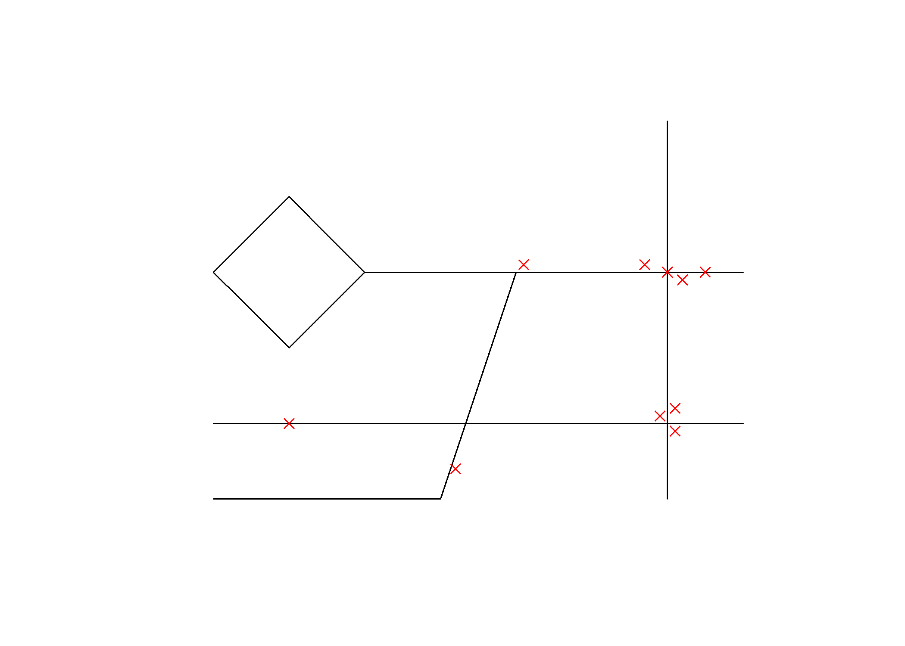
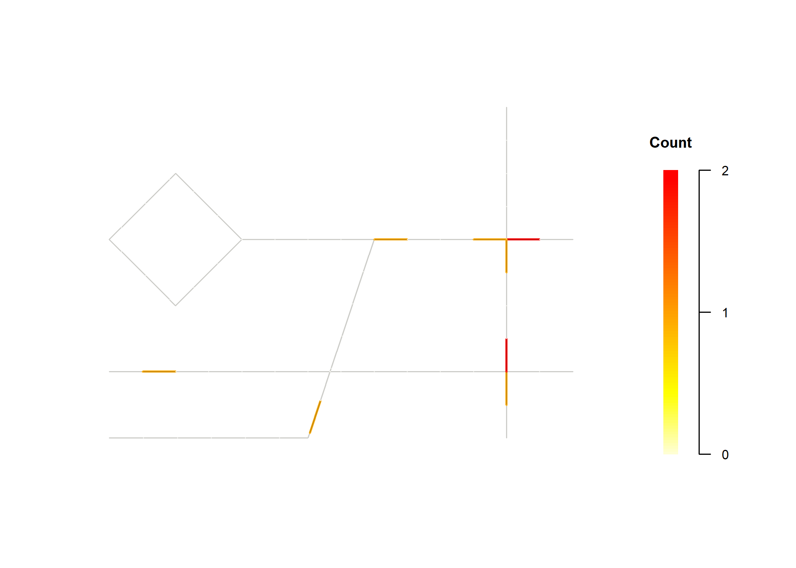
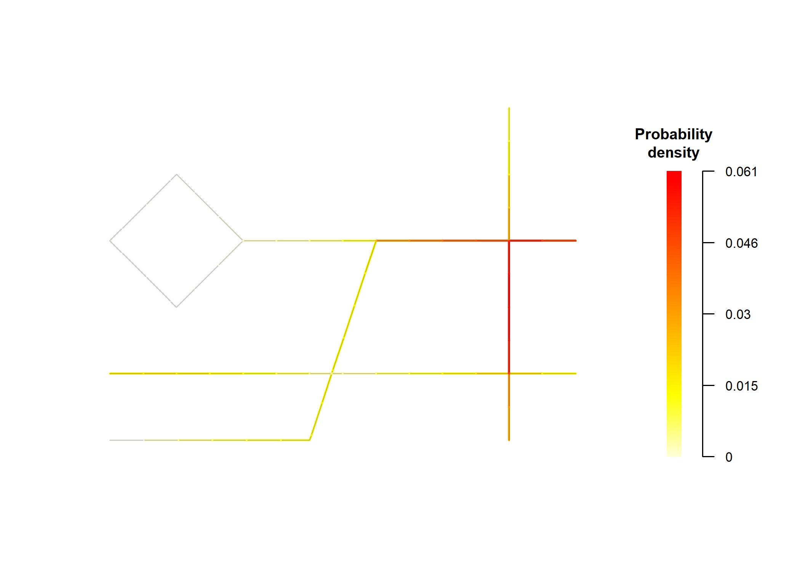

Overview
pavement is a package designed to analyze spatial events occurring on roadways. It provides comprehensive toolkit for working with spatial data, empowering users to understand patterns and trends in road-related phenomena.
Installation
You can install the development version of pavement using the following methods:
Using install.packages() (R-universe)
# Enable the R-universe
options(repos = c(
nononoexe = "https://nononoexe.r-universe.dev",
cran = "https://cloud.r-project.org"
))
# Install the package
install.packages("pavement")Using pak
# install.packages("pak)
pak::pak("nononoexe/pavement")Usage
This example demonstrates how to visualize the distribution of roads and traffic accidents using pavement:
library(pavement)
segmented_network <- sample_roads |>
create_road_network() |>
set_events(sample_accidents) |>
create_segmented_network(segment_length = 0.5) |>
convolute_segmented_network()
#> Warning in transform_coordinates(spatial_object, target = "cartesian", quiet =
#> quiet): CRS is missing. Returning the input object without transformation.
plot(segmented_network, mode = "event")
plot(segmented_network, mode = "count")
plot(segmented_network, mode = "density")
Code of conduct
Please note that this project is released with a Contributor Code of Conduct. By participating in this project you agree to abide by its terms.